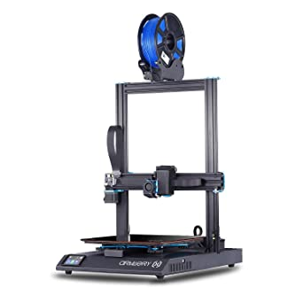
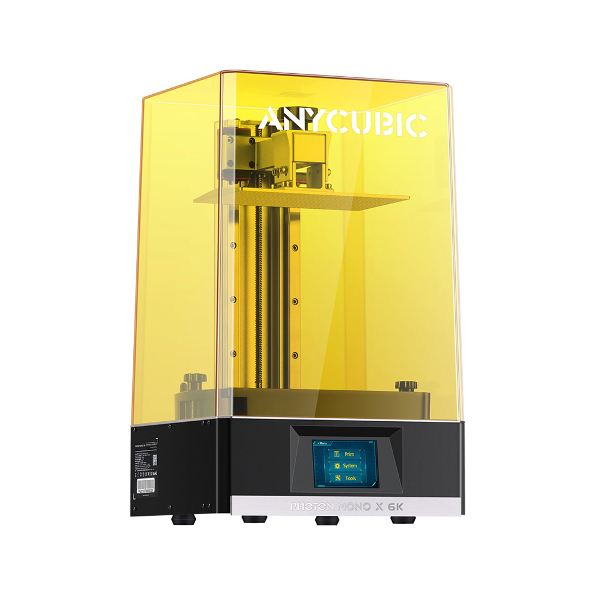

La impresión 3D, también conocida como prototipado rápido, fabricación por capas/aditiva o DDM es el conjunto de tecnologías que permiten la creación de un objeto tridimensional mediante técnicas de adición, superponiendo capas sucesivas de distintos materiales.
Para ciertos tipos de materiales es necesario el uso de varias de estas técnicas combinadas (indirectas). Otras en cambio permiten disponer de la pieza finalizada en una sola impresión (directas). En esta categoría destaca la impresión FDM, la más popular en el ámbito doméstico por su simplicidad y bajo coste.
La impresión en 3D ofrece infinitas posibilidades creativas. a nivel doméstico podemos imprimir objetos decorativos, réplicas, accesorios, maquetas yun largo etc.
A nivel profesional supone un gran cambio en el flujo de producción No hace tanto era necesario esperar semanas para disponer de una representación de un modelo digital, ahora podemos disponer en horas de maquetas realistas de cualquier pieza, agilizando el proceso de prototipado y ahorrando costes en la producción.
Usamos diferentes máquinas según las especificaciones de nuestros clientes. Estas son las impresoras que utilizamos:
 
Existen multiples tipos de materiales, cada uno orientado hacia
un tipo de producción.
Por un lado tenemos los materiales en filamento
para máquinas FDM. Este tipo de impresoras es el más extendido, por lo que el
catálogo de materiales también es mayor. Aquí contamos con materiales como:
El material más usado. Es el más sencillo de imprimir y proporciona un buen acabado por un bajo coste. Ideal para prototipados o figuras decorativas.
Material más técnico. Caracterizado por ser más resistente.
Material resistente y más sencillo de imprimir que el ABS.
Materiales flexibles. Existe una gran gama en función de la de la flexibilidad deseada
Derivados del PLA. Imitan la textura de materiales como la madera, mármol, granito etc